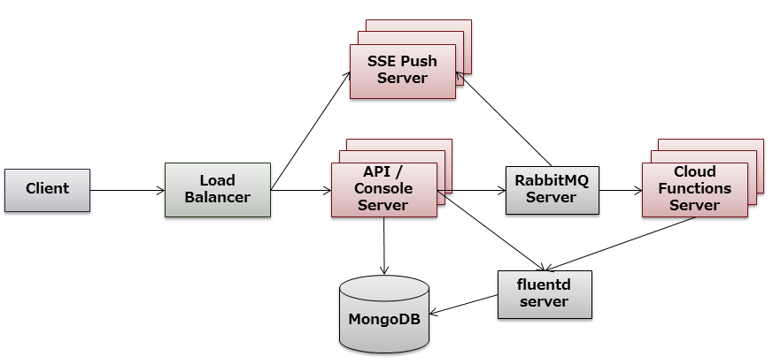

2. システム構成¶
2.1. 標準構成¶
モバイルバックエンド基盤のシステム全体の構成は以下のようになります。 本構成は論理構成であり、１つのサーバに複数のサーバを搭載しても構いません。
{kind=link}
赤色になっているサーバが、モバイルバックエンド基盤で提供するサーバになります。
2.1.1. ロードバランサ¶
クライアントからのリクエストはロードバランサで受け付け、後段のサーバに分散します。 なお、HTTPS(TLS) の終端はロードバランサで行うことを推奨します。
2.1.2. API サーバ / デベロッパーコンソールサーバ¶
モバイルバックエンド基盤の中心となるサーバです。
API サーバは REST API リクエストを受付け、応答するサーバです。 デベロッパーコンソールサーバは、管理用の機能/UIを提供するサーバです。
本文書は、この API サーバ / デベロッパーサーバの利用手順について述べます。
2.1.4. SSE Push サーバ¶
SSE Push 機能を提供するサーバです。 SSE Push サーバの利用手順については、SSE Push サーバ利用手順書 を参照してください。
2.1.5. Cloud Functions サーバ¶
Cloud Functions 機能を提供するサーバです。
Cloud Functions サーバの利用手順については、Cloud Functions サーバ利用手順書 を参照してください。
2.1.6. RabbitMQ Server¶
RabbitMQ Server は、API サーバ - SSE Push サーバ、および API サーバ - Cloud Functions サーバ間の通信を行うためのサーバです。
2.1.7. fluentd server¶
各サーバが出力するログは fluentd で収集し、MongoDB に格納します。 (fluentd を使用せず、各サーバ上にファイルで格納するようにすることも可能です)
2.2. 最小構成¶
上記のうち、モバイルバックエンド基盤で利用が必須となるのは API サーバ / デベロッパーコンソールサーバ / MongoDB の３つです。
- SSE Push を使用しない場合は、SSE Push サーバは省略可能です。
- Cloud Functions を使用しない場合は、Cloud Functions サーバは省略可能です。
- SSE Push / Cloud Functions いずれも使用しない場合は、RabbitMQ Server は省略可能です。
- ロギングを MongoDB に行わない場合は、fluentd サーバは省略可能です。
2.3. 起動・終了順序¶
サーバの起動順序には以下の依存関係があります。
| 対象サーバ | 依存するサーバ |
|---|---|
| fluentd サーバ | MongoDB サーバ |
| Cloud Functions サーバマネージャ | RabbitMQ サーバ |
| SSE Push サーバ | RabbitMQ サーバ |
| API/デベロッパーコンソールサーバ | MongoDB サーバ |
注意
依存するサーバが起動していない状態では、当該サーバの起動(再起動を含む)は失敗しますので、注意してください。 なお、依存するサーバを再起動させることは問題ありません。
推奨するサーバの起動順序は以下のとおりです(停止は逆順)。
- MongoDB ⇒ fluentd, RabbitMQ ⇒ Cloud Functions, API/デベロッパーコンソールサーバ, SSE Push サーバ